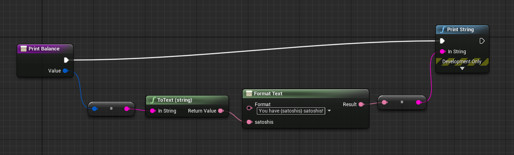

Tutorial #1 - Basic plugin usage¶
In this tutorial we’ll show you how to use the basic functionality of the Stratis Unreal plugin: create a wallet, check your balance and unspent transaction outputs (UTXOs), and send coins to another address.
Of we go!
Prerequisite¶
You need to set up your project and Stratis Unreal Plugin within it. If you looking for a tutorial about basic project setup, please check our Tutorial #0.
Setting up StratisUnrealManager and creating a wallet¶
First of all, we need to set up StratisUnrealManager to be able to use all of the API methods provided by the plugin.
Let’s click on the Blueprints menu in the toolbar and click Open Level Blueprint.
{kind=link}
Now we see blueprint editor, let’s create a variable stratisManager with the type Stratis Unreal Manager.
Also, let’s create a function called InitializeStratisUnrealManager, where we will define the initialization logic for our manager.
{kind=link}
Define InitializeStratisUnrealManager like below:
{kind=link}
Now we’re going to set up base URL, network, and wallet mnemonic.
Let’s walk through the parameters:
Mnemonic. Mnemonic is a sequence of words used to define the private key of your wallet. You can create mnemonic using just a pen, a paper, and a dice, or using different hardware & software mnemonic generators.Base Url. To use Stratis Unreal Plugin, you need a full node to be running locally or remotely. Find your node’s address (IP or domain) if you’re running a remote node, or usehttp://localhost:44336if you’re running your node locally.Network. The network you want to operate on. UseCirrusandCirrusTestfor production and testing respectively.
The last thing we need to do is call our new function Initialize Stratis Manager on the BeginPlay event:
{kind=link}
Getting a wallet balance¶
Now let’s learn how we can get a balance of our wallet.
First, let’s make a function for printing balance response to screen. Implement a blueprint like below:
{kind=link}
Note:
Valuehas a type ofFUInt64.
Now, let’s make a very similar function for the Error type:

Well, now we can call the GetBalance function and await the result. Add GetBalance to the event graph (right after manager initialization or after delay like in the example) and set its Delegate and Error Delegate fields to custom events via Get Custom Event.
{kind=link}
Bind newly-created events to the functions we defined: Print Balance and Print Error.
Desired event graph is shown below (Delay node is not necessary):
{kind=link}
Now, just press the Play key, and the balance will be printed on your screen & debug console.
Getting unspent transaction outputs¶
Okay, now we will try to find unspent transaction outputs for our wallet.
At first, let’s create a method Print UTXOs and add the input parameter UTXOs with type Array of UTXO. Now we’re going to iterate over UTXO’s array using For Each Loop node:
{kind=link}
Now let’s just print every UTXO using Break… and Format Text nodes:

We are almost done. Now we just need to call the Get Coins node as we did for Get Balance node, and use functions (Print UTXOs and Print Error) we made previously. The final scheme is shown below:

Sending coins & waiting for a receipt¶
Now let’s try to implement a more complex logic: send some coins and await for transaction’s receipt.
At first, add the Send Coins Transaction node and set its inputs:
Destination address: in this example, we’re usingtD5aDZSu4Go4A23R7VsjuJTL51YMyeoLySfor Cirrus Test networkMoney: the number of satoshis we want to send. Let’s send 10.000 satoshis (= 0.0001 STRAX).

And now we need to join the Transaction ID output of the TransactionSent event to the Transaction ID input of the Wait Till Receipt Available node.
At last, add some printing logic to see when receipt is available, and we’re done!
{kind=link}
(See this scheme on blueprintue.com)
What’s next?¶
In this tutorial, we’ve learned how to use some core plugin functions: get balance, send coins, and wait for a receipt. In the next tutorial, we’ll cover more advanced functionality of the plugin - interacting with smart contracts.
If you found a problem, you can open an issue on the project’s Github page. If you still have questions, feel free to ask them in our Discord channel.
Stay tuned!